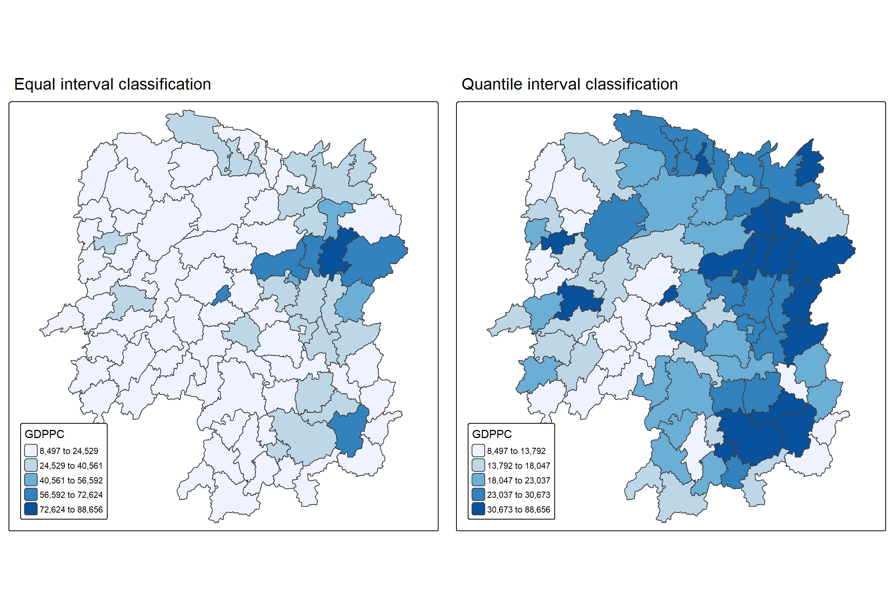
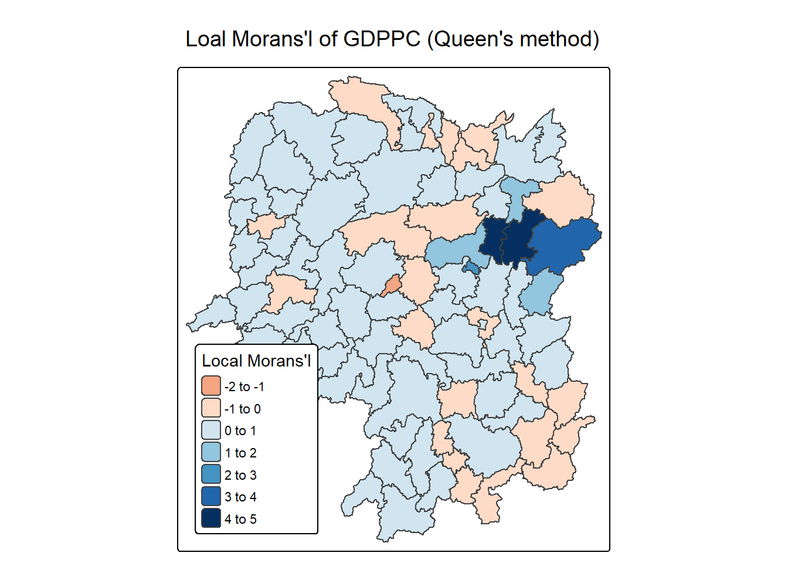
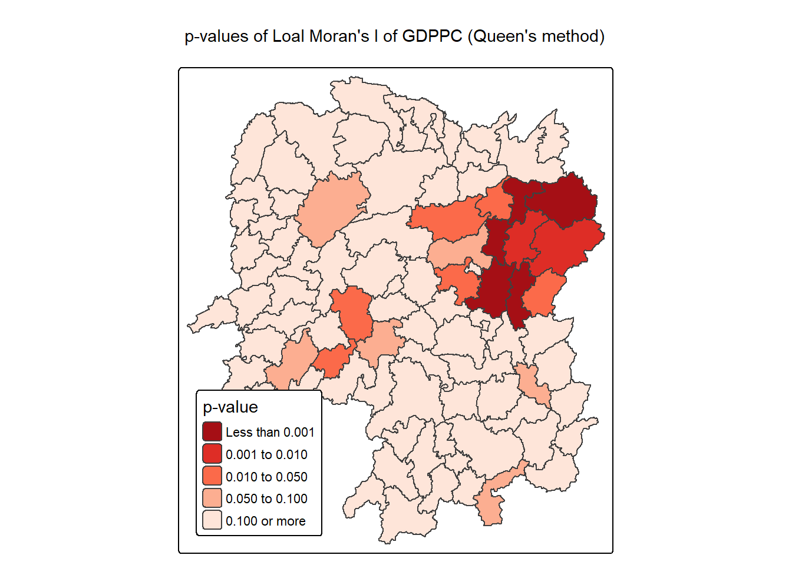
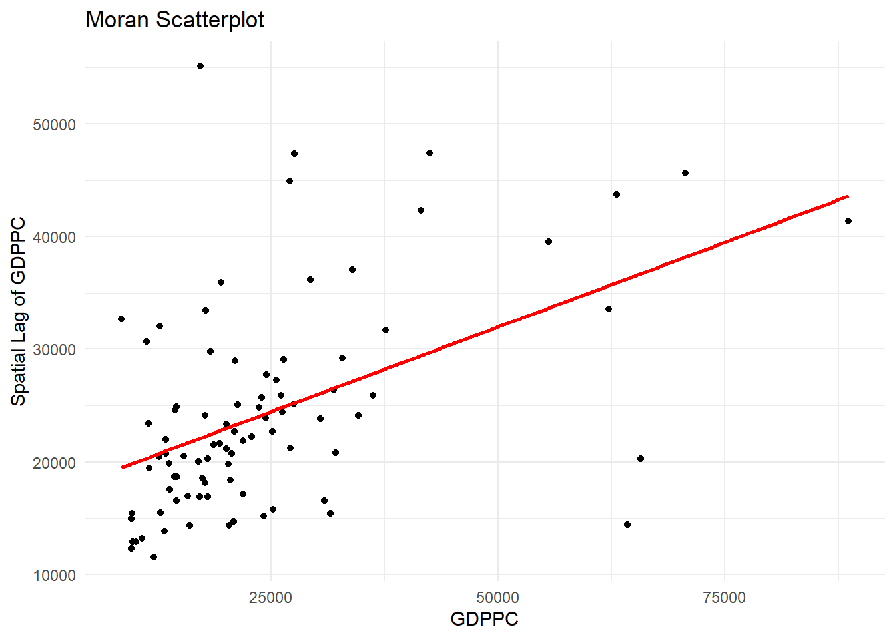
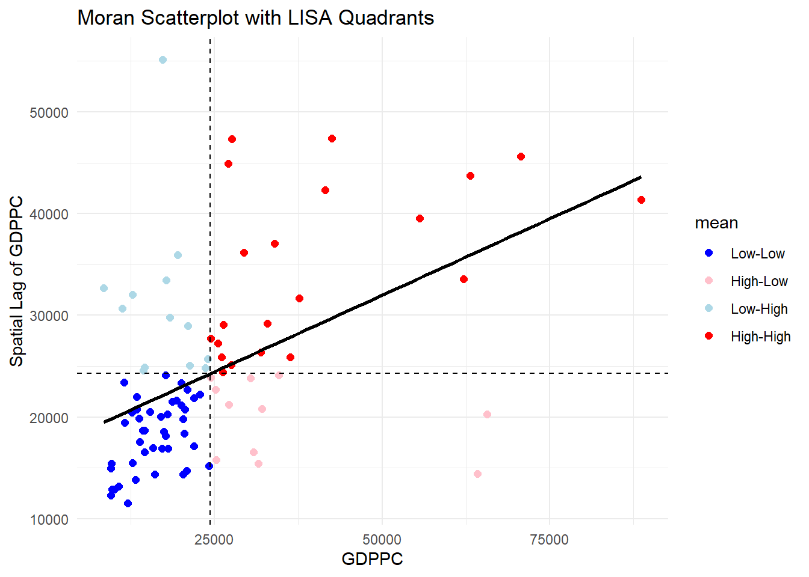
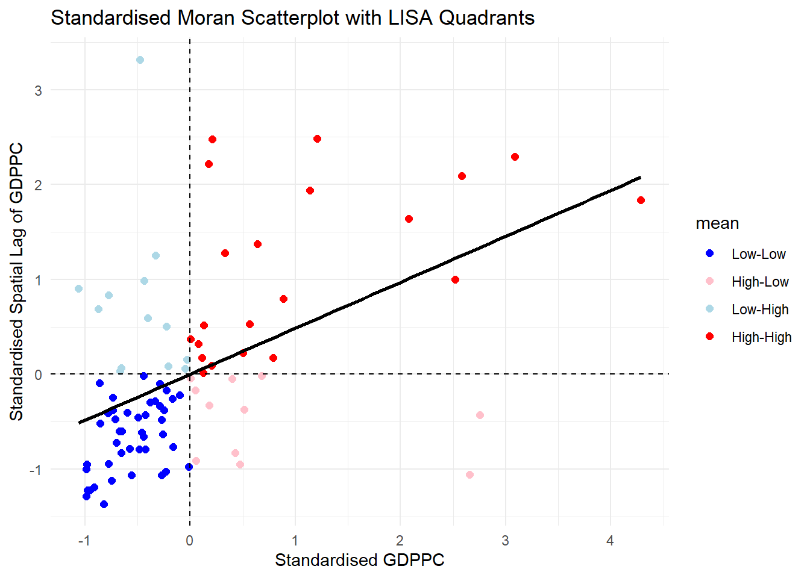
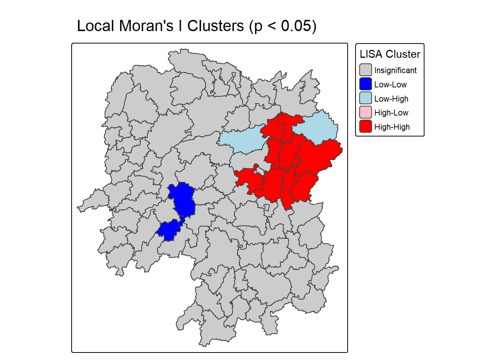
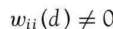
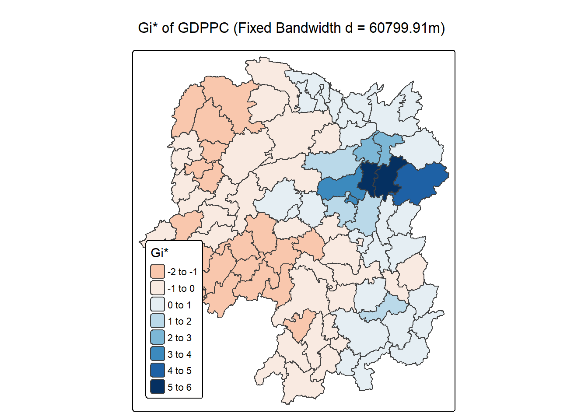
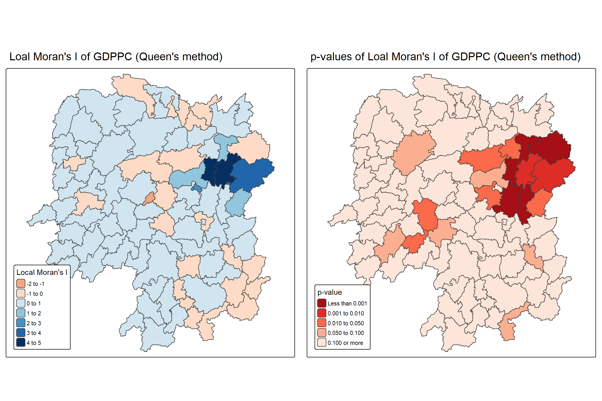

pacman::p_load(sf, sfdep, tmap, tidyverse)10 Local Measures of Spatial Autocorrelation
10.1 Overview
Local Measures of Spatial Autocorrelation (LMSA) focus on the relationships between each observation and its surroundings, rather than providing a single summary of these relationships across the map. In this sense, they are not summary statistics but scores that allow us to learn more about the spatial structure in our data. The general intuition behind the metrics however is similar to that of global ones. Some of them are even mathematically connected, where the global version can be decomposed into a collection of local ones. One such example are Local Indicators of Spatial Association (LISA). Beside LISA, Getis-Ord’s Gi-statistics will be introduce as an alternative LMSA statistics that present complementary information or allow us to obtain similar insights for geographically referenced data.
In this hands-on exercise, you will learn how to compute Local Measures of Spatial Autocorrelation (LMSA) by using sfdep package. By the end to this hands-on exercise, you will be able to:
- import geospatial data using appropriate function(s) of sf package,
- import csv file using appropriate function of readr package,
- perform relational join using appropriate join function of dplyr package,
- compute Local Indicator of Spatial Association (LISA) statistics for detecting clusters and outliers by using appropriate functions sfdep package;
- compute Getis-Ord’s Gi-statistics for detecting hot spot or/and cold spot area by using appropriate functions of sfdep package; and
- to visualise the analysis output by using tmap package.
10.2 Getting Started
10.2.1 The analytical question
In spatial policy, one of the main development objective of the local govenment and planners is to ensure equal distribution of development in the province. Our task in this study, hence, is to apply appropriate spatial statistical methods to discover if development are even distributed geographically. If the answer is No. Then, our next question will be “is there sign of spatial clustering?”. And, if the answer for this question is yes, then our next question will be “where are these clusters?”
In this case study, we are interested to examine the spatial pattern of a selected development indicator (i.e. GDP per capita) of Hunan Provice, People Republic of China.(https://en.wikipedia.org/wiki/Hunan)
10.2.2 The Study Area and Data
Two data sets will be used in this hands-on exercise, they are:
- Hunan province administrative boundary layer at county level. This is a geospatial data set in ESRI shapefile format.
- Hunan_2012.csv: This csv file contains selected Hunan’s local development indicators in 2012.
10.2.3 Setting the Analytical Toolls
Before we get started, we need to ensure that sf, sfdep, tmap and tidyverse packages of R are currently installed in your R.
- sf is use for importing and handling geospatial data in R,
- tidyverse is mainly use for wrangling attribute data in R,
- sfdep will be used to compute spatial weights, global and local spatial autocorrelation statistics, and
- tmap will be used to prepare cartographic quality choropleth map.
The code chunk below is used to perform the following tasks:
- creating a package list containing the necessary R packages,
- checking if the R packages in the package list have been installed in R,
- if they have yet to be installed, RStudio will installed the missing packages,
- launching the packages into R environment.
10.3 Getting the Data Into R Environment
In this section, you will learn how to bring a geospatial data and its associated attribute table into R environment. The geospatial data is in ESRI shapefile format and the attribute table is in csv fomat.
10.3.1 Import shapefile into r environment
The code chunk below uses st_read() of sf package to import Hunan shapefile into R. The imported shapefile will be simple features Object of sf.
hunan <- st_read(dsn = "chap10/data/geospatial",
layer = "Hunan") %>%
st_transform(crs = 32650)Reading layer `Hunan' from data source `C:\tskam\r4gdsa\chap10\data\geospatial' using driver `ESRI Shapefile'
Simple feature collection with 88 features and 7 fields
Geometry type: POLYGON
Dimension: XY
Bounding box: xmin: 108.7831 ymin: 24.6342 xmax: 114.2544 ymax: 30.12812
Geodetic CRS: WGS 84
Tip
The raw data is in WGS 84 geographic coordinates system. For geospatial analysis, it is appropriate to use projected coordinates system. In the code chunk above, st_transform() is used to transform Hunan geospatial data from WGS 84 to UTM zone 50N (i.e. EPSG: 32650).
10.3.2 Import csv file into r environment
Next, we will import Hunan_2012.csv into R by using read_csv() of readr package. The output is R data frame class.
hunan2012 <- read_csv("chap10/data/aspatial/Hunan_2012.csv")10.3.3 Performing relational join
The code chunk below will be used to update the attribute table of hunan’s sf data frame with the attribute fields of hunan2012 dataframe. This is performed by using left_join() of dplyr package.
hunan <- left_join(hunan,hunan2012) %>%
select(1:4, 7, 15)10.3.4 Visualising Regional Development Indicator
In the code chunks below, tmap functions are used:
- to build two choropleth maps by using equal interval (i.e equal) and quantile (i.e. quantile) classification methods, and
- to plot both maps next to each other by using
tmap_arrange().
equal <- tm_shape(hunan) +
tm_polygons(fill = "GDPPC",
fill.scale = tm_scale_intervals(
style = "equal",
n = 5,
values = "brewer.blues"),
fill.legend = tm_legend(
title = "GDPPC",
position = tm_pos_in(
"left", "bottom"))) +
tm_borders(fill_alpha = 0.5) +
tm_title("Equal interval classification")
quantile <- tm_shape(hunan) +
tm_polygons(fill = "GDPPC",
fill.scale = tm_scale_intervals(
style = "quantile",
n = 5,
values = "brewer.blues"),
fill.legend = tm_legend(
title = "GDPPC",
position = tm_pos_in(
"left", "bottom"))) +
tm_borders(fill_alpha = 0.5) +
tm_title("Quantile interval classification")
tmap_arrange(equal,
quantile,
asp=1,
ncol=2)
Important
- Does the plot above reveal any outliers or clusters?
- Does the plot above indicate the presence of hot spots or cold spots?
10.4 Local Indicators of Spatial Association(LISA)
Local Indicators of Spatial Association or LISA are statistics that evaluate the existence of clusters and/or outliers in the spatial arrangement of a given variable. For instance if we are studying distribution of GDP per capita of Hunan Provice, People Republic of China, local clusters in GDP per capita mean that there are counties that have higher or lower rates than is to be expected by chance alone; that is, the values occurring are above or below those of a random distribution in space.
In this section, you will learn how to apply appropriate Local Indicators for Spatial Association (LISA), especially local Moran’I to detect cluster and/or outlier from GDP per capita 2012 of Hunan Province, PRC.
10.4.1 Computing Contiguity Spatial Weights
Before we can compute the local spatial autocorrelation statistics, we need to construct a spatial weights of the study area. The spatial weights is used to define the neighbourhood relationships between the geographical units (i.e. county) in the study area.
In the code chunk below, st_contiguity() of sfdep package is used to compute contiguity weight matrices for the study area. This function builds a neighbours list based on regions with contiguous boundaries. If you look at the documentation you will see that you can pass a “queen” argument that takes TRUE or FALSE as options. If you do not specify this argument the default is set to TRUE, that is, if you don’t specify queen = FALSE this function will return a list of first order neighbours using the Queen criteria.
Next, st_weights() is used to calculate polygon spatial weights from the nb list.
st_weights() provides three arguments, they are:
- nb: A neighbor list object as created by
st_neighbors(). - style: Default “W” for row standardized weights. This value can also be “B”, “C”, “U”, “minmax”, and “S”. B is the basic binary coding, W is row standardised (sums over all links to n), C is globally standardised (sums over all links to n), U is equal to C divided by the number of neighbours (sums over all links to unity), while S is the variance-stabilizing coding scheme proposed by Tiefelsdorf et al. 1999, p. 167-168 (sums over all links to n).
- allow_zero: If TRUE, assigns zero as lagged value to zone without neighbors.
wm_q <- hunan %>%
mutate(nb = st_contiguity(geometry),
wt = st_weights(
nb, style = "W"),
.before = 1)
Tip
In the code chunk above, mutate() is used to write the computed nb and wt values back into hunan sf data table.
To reveal the neighbour list, code chunk below is used.
summary(wm_q$nb)Neighbour list object:
Number of regions: 88
Number of nonzero links: 448
Percentage nonzero weights: 5.785124
Average number of links: 5.090909
Link number distribution:
1 2 3 4 5 6 7 8 9 11
2 2 12 16 24 14 11 4 2 1
2 least connected regions:
30 65 with 1 link
1 most connected region:
85 with 11 linksThe summary report above shows that there are 88 area units in Hunan. The most connected area unit has 11 neighbours. There are two area units with only one neighbour.
10.4.2 Row-standardised weights matrix
Next, we need to assign weights to each neighboring polygon. In our case, each neighboring polygon will be assigned equal weight (style=“W”). This is accomplished by assigning the fraction 1/(#ofneighbors) to each neighboring county then summing the weighted income values. While this is the most intuitive way to summaries the neighbors’ values it has one drawback in that polygons along the edges of the study area will base their lagged values on fewer polygons thus potentially over- or under-estimating the true nature of the spatial autocorrelation in the data. For this example, we’ll stick with the style=“W” option for simplicity’s sake but note that other more robust options are available, notably style=“B”.
What can we learn from the code chunk above?
- The input of
nb2listw()must be an object of class nb. The syntax of the function has two major arguments, namely style and zero.poly. - style can take values “W”, “B”, “C”, “U”, “minmax” and “S”. B is the basic binary coding, W is row standardised (sums over all links to n), C is globally standardised (sums over all links to n), U is equal to C divided by the number of neighbours (sums over all links to unity), while S is the variance-stabilizing coding scheme proposed by Tiefelsdorf et al. 1999, p. 167-168 (sums over all links to n).
- If zero policy is set to TRUE, weights vectors of zero length are inserted for regions without neighbour in the neighbours list. These will in turn generate lag values of zero, equivalent to the sum of products of the zero row t(rep(0, length=length(neighbours))) %*% x, for arbitrary numerical vector x of length length(neighbours). The spatially lagged value of x for the zero-neighbour region will then be zero, which may (or may not) be a sensible choice.
10.4.3 Computing local Moran’s I
To compute local Moran’s I, the local_moran() function of sfdep will be used. It computes Ii values, given a set of zi values and a listw object providing neighbour weighting information for the polygon associated with the zi values.
The code chunks below are used to compute local Moran’s I of GDPPC2012 at the county level.
lisa <- wm_q %>%
mutate(local_moran = local_moran(
GDPPC, nb, wt, nsim = 99),
.before = 1) %>%
unnest(local_moran)local_moran() function returns a matrix of values whose columns are:
- Ii: the local Moran’s I statistics
- E.Ii: the expectation of local moran statistic under the randomisation hypothesis
- Var.Ii: the variance of local moran statistic under the randomisation hypothesis
- Z.Ii:the standard deviate of local moran statistic
- Pr(): the p-value of local moran statistic
glimpse(lisa)Rows: 88
Columns: 21
$ ii <dbl> -1.468468e-03, 2.587817e-02, -1.198765e-02, 1.022468e-03,…
$ eii <dbl> 1.055854e-04, 2.874295e-03, -2.251232e-02, -3.257456e-05,…
$ var_ii <dbl> 4.600084e-04, 9.913986e-03, 9.207982e-02, 4.414091e-06, 1…
$ z_ii <dbl> -0.07338993, 0.23103454, 0.03468377, 0.50216820, 0.349012…
$ p_ii <dbl> 0.9414958277, 0.8172879719, 0.9723319034, 0.6155492085, 0…
$ p_ii_sim <dbl> 0.76, 0.98, 0.82, 0.54, 0.60, 0.72, 0.06, 0.16, 0.02, 0.0…
$ p_folded_sim <dbl> 0.38, 0.49, 0.41, 0.27, 0.30, 0.36, 0.03, 0.08, 0.01, 0.0…
$ skewness <dbl> -0.9148345, -0.9791580, 0.8830241, 0.7801455, 1.1294778, …
$ kurtosis <dbl> 0.09531721, 1.16980672, 0.90329656, -0.10106105, 1.268702…
$ mean <fct> Low-High, Low-Low, High-Low, High-High, High-High, High-L…
$ median <fct> High-High, High-High, High-High, High-High, High-High, Hi…
$ pysal <fct> Low-High, Low-Low, High-Low, High-High, High-High, High-L…
$ nb <nb> <2, 3, 4, 57, 85>, <1, 57, 58, 78, 85>, <1, 4, 5, 85>, <1,…
$ wt <list> <0.2, 0.2, 0.2, 0.2, 0.2>, <0.2, 0.2, 0.2, 0.2, 0.2>, <0…
$ NAME_2 <chr> "Changde", "Changde", "Changde", "Changde", "Changde", "C…
$ ID_3 <int> 21098, 21100, 21101, 21102, 21103, 21104, 21109, 21110, 2…
$ NAME_3 <chr> "Anxiang", "Hanshou", "Jinshi", "Li", "Linli", "Shimen", …
$ ENGTYPE_3 <chr> "County", "County", "County City", "County", "County", "C…
$ County <chr> "Anxiang", "Hanshou", "Jinshi", "Li", "Linli", "Shimen", …
$ GDPPC <dbl> 23667, 20981, 34592, 24473, 25554, 27137, 63118, 62202, 7…
$ geometry <POLYGON [m]> POLYGON ((22320.48 3301894,..., POLYGON ((35522.9…10.4.3.1 Mapping the local Moran’s I
10.4.3.2 Mapping local Moran’s I values
Using choropleth mapping functions of tmap package, we can plot the local Moran’s I values by using the code chinks below.
tm_shape(lisa) +
tm_polygons(fill = "ii",
fill.scale = tm_scale_intervals(
style = "pretty",
n = 5,
values = "brewer.RdBu"),
fill.legend = tm_legend(
title = "Local Morans'I",
position = tm_pos_in(
"left", "bottom"))) +
tm_borders(fill_alpha = 0.5) +
tm_title("Loal Morans'I of GDPPC (Queen's method)")
10.4.3.3 Mapping local Moran’s I p-values
The choropleth shows there is evidence for both positive and negative Ii values. However, it is useful to consider the p-values for each of these values, as consider above.
The code chunks below produce a choropleth map of Moran’s I p-values by using functions of tmap package.
tm_shape(lisa) +
tm_polygons(fill = "p_ii",
fill.scale = tm_scale_intervals(
breaks = c(-Inf, 0.001, 0.01, 0.05, 0.1, Inf),
values = "-brewer.Reds"),
fill.legend = tm_legend(
title = "p-value",
position = tm_pos_in("left", "bottom")
)) +
tm_borders(fill_alpha = 0.5) +
tm_title("p-values of Loal Moran's I of GDPPC (Queen's method)")
10.4.3.4 Mapping both local Moran’s I values and p-values
For effective interpretation, it is better to plot both the local Moran’s I values map and its corresponding p-values map next to each other.
The code chunk below will be used to create such visualisation.
ii.map <- tm_shape(lisa) +
tm_polygons(fill = "ii",
fill.scale = tm_scale_intervals(
style = "pretty",
n = 5,
values = "brewer.RdBu"),
fill.legend = tm_legend(
title = "Local Moran's I",
position = tm_pos_in(
"left", "bottom"))) +
tm_borders(fill_alpha = 0.5) +
tm_title("Loal Moran's I of GDPPC (Queen's method)")
p_ii.map <- tm_shape(lisa) +
tm_polygons(fill = "p_ii",
fill.scale = tm_scale_intervals(
breaks = c(-Inf, 0.001, 0.01, 0.05, 0.1, Inf),
values = "-brewer.Reds"),
fill.legend = tm_legend(
title = "p-value",
position = tm_pos_in("left", "bottom")
)) +
tm_borders(fill_alpha = 0.5) +
tm_title("p-values of Loal Moran's I of GDPPC (Queen's method)")
tmap_arrange(ii.map, p_ii.map, asp=1, ncol=2)
10.5 Creating a LISA Cluster Map
The LISA Cluster Map shows the significant locations color coded by type of spatial autocorrelation. The first step before we can generate the LISA cluster map is to plot the Moran scatterplot.
10.5.1 Plotting Moran scatterplot
The Moran scatterplot is an illustration of the relationship between the values of the chosen attribute at each location and the average value of the same attribute at neighboring locations.
The code chunk below plots the Moran scatterplot of GDPPC 2012 by using moran.plot() of spdep.
lisa <- lisa %>%
mutate(lag_GDPPC = st_lag(
GDPPC, nb, wt),
.before = 1) %>%
unnest(lag_GDPPC)ggplot(data = lisa,
aes(x = GDPPC,
y = lag_GDPPC)) +
geom_point() +
geom_smooth(method = "lm",
se = FALSE,
color = "red") +
labs(x = "GDPPC",
y = "Spatial Lag of GDPPC",
title = "Moran Scatterplot") +
theme_minimal()
ggplot(data = lisa,
aes(x = GDPPC,
y = lag_GDPPC,
color = mean)) +
geom_point(size = 2) +
geom_smooth(method = "lm",
se = FALSE,
color = "black") +
geom_hline(yintercept=mean(lisa$lag_GDPPC), lty=2) +
geom_vline(xintercept=mean(lisa$GDPPC), lty=2) +
scale_color_manual(
values = c("High-High" = "red",
"Low-Low" = "blue",
"Low-High" = "lightblue",
"High-Low" = "pink")) +
labs(x = "GDPPC",
y = "Spatial Lag of GDPPC",
title = "Moran Scatterplot with LISA Quadrants") +
theme_minimal()
Notice that the plot is split in 4 quadrants. The top right corner belongs to areas that have high GDPPC and are surrounded by other areas that have the average level of GDPPC. This are the high-high locations in the lesson slide.
10.5.2 Plotting Moran scatterplot with standardised variable
First we will use scale() to centers and scales the variable. Here centering is done by subtracting the mean (omitting NAs) the corresponding columns, and scaling is done by dividing the (centered) variable by their standard deviations.
lisa <- lisa %>%
mutate(z_GDPPC = scale(GDPPC),
z_lag_GDPPC = scale(lag_GDPPC),
.before = 1)The as.vector() added to the end is to make sure that the data type we get out of this is a vector, that map neatly into out dataframe.
Now, we are ready to plot the Moran scatterplot again by using the code chunk below.
ggplot(data = lisa,
aes(x = z_GDPPC,
y = z_lag_GDPPC,
color = mean)) +
geom_point(size = 2) +
geom_smooth(method = "lm",
se = FALSE,
color = "black") +
geom_hline(yintercept=mean(lisa$z_lag_GDPPC), lty=2) +
geom_vline(xintercept=mean(lisa$z_GDPPC), lty=2) +
scale_color_manual(
values = c("High-High" = "red",
"Low-Low" = "blue",
"Low-High" = "lightblue",
"High-Low" = "pink")) +
labs(x = "Standardised GDPPC",
y = "Standardised Spatial Lag of GDPPC",
title = "Standardised Moran Scatterplot with LISA Quadrants") +
theme_minimal()
10.5.3 Preparing LISA map classes
The code chunks below show the steps to prepare a LISA cluster map.
Next, derives the spatially lagged variable of interest (i.e. GDPPC) and centers the spatially lagged variable around its mean.
This is follow by centering the local Moran’s around the mean.
Next, we will set a statistical significance level for the local Moran.
signif <- 0.05 These four command lines define the low-low (1), low-high (2), high-low (3) and high-high (4) categories.
Lastly, places non-significant Moran in the category 0.
In fact, we can combined all the steps into one single code chunk as shown below:
10.5.4 Plotting LISA map
Now, we can build the LISA map by using the code chunks below.
lisa <- lisa %>%
mutate(
LISA_cluster = ifelse(
p_ii < 0.05,
as.character(mean), # keep original "High-High", etc.
"Insignificant" # match capitalisation style
),
LISA_cluster = factor(
LISA_cluster,
levels = c("Insignificant", "Low-Low", "Low-High", "High-Low", "High-High")
)
)tm_shape(lisa) +
tm_polygons(
fill = "LISA_cluster",
fill.scale = tm_scale_categorical(
values = c(
"grey80", # Insignificant
"blue", # Low-Low
"lightblue", # Low-High
"pink", # High-Low
"red" # High-High
)
),
fill.legend = tm_legend(title = "LISA Cluster")
) +
tm_borders() +
tm_title("Local Moran's I Clusters (p < 0.05)")
For effective interpretation, it is better to plot both the local Moran’s I values map and its corresponding p-values map next to each other.
The code chunk below will be used to create such visualisation.
We can also include the local Moran’s I map and p-value map as shown below for easy comparison.
Question: What statistical observations can you draw from the LISA map above?
10.6 Hot Spots and Cold Spots Analysis (HCSA)
Hot spots and cold spots analysis is a technique used in spatial statistics to identify statistically significant clusters of high values (hot spots) and low values (cold spots) within a dataset. These analyses help visualize and understand spatial patterns, revealing areas where data points are clustered more densely than would be expected by random chance
The term hot spots refer to areas where high values are concentrated and surrounded by other high values. For example, a hot spot analysis might reveal clusters of high GDP per capita in a province, indicating areas with significantly higher GDP per capita than other parts of the province.
On the other hands, the term cold spots refer to areas where low values are concentrated and surrounded by other low values. An example could be clusters of low GDP per capita, indicating areas where GDP per capita is consistently low.
The term ‘hot spot’ has been used generically across disciplines to describe a region or value that is higher relative to its surroundings (Lepers et al 2005, Aben et al 2012, Isobe et al 2015).
HCSA uses statistical methods, like the Getis-Ord Gi* statistic, to determine if the observed clustering is statistically significant or could have occurred randomly.
The analysis consists of three steps:
- Deriving spatial weight matrix
- Computing Gi* statistics
- Mapping Gi* statistics
- Communicating the analysis results
10.6.1 Deriving fixed distance weight matrix
Whist the spatial autocorrelation considered units which shared borders, for Getis-Ord Gi* statistics, we are defining neighbours based on distance.
There are two type of distance-based proximity matrix, they are:
- fixed distance weight matrix; and
- adaptive distance weight matrix.
In this section, you will learn how to compute fixed distance weight matrix by using st_dist_band() and st_weights() of sfdep package.
10.6.1.1 Determine the cut-off distance
Firstly, we need to determine the upper limit for distance band by using the steps below:
ct <- critical_threshold(st_geometry(hunan))
ct[1] 60799.91The summary report shows that the largest first nearest neighbour distance is 60.80 km, so using this as the upper threshold gives certainty that all units will have at least one neighbour.
Using the critical threshold value computed above, code chunl below is used to compute the fixed distance weight.
wm_fd <- hunan %>%
mutate(nb = include_self(
st_dist_band(
st_geometry(geometry),
upper = ct)),
wts = st_weights(nb,
style = "W"),
.before = 1)
Note
Noted that for Gi* include_self() must be used to endure that .
HCSA_fdw <- wm_fd %>%
mutate(local_Gi = local_gstar_perm(
GDPPC, nb, wts, nsim = 99),
.before = 1) %>%
unnest(local_Gi)
HCSA_fdwSimple feature collection with 88 features and 18 fields
Geometry type: POLYGON
Dimension: XY
Bounding box: xmin: -316283 ymin: 2735534 xmax: 230955.3 ymax: 3349137
Projected CRS: WGS 84 / UTM zone 50N
# A tibble: 88 × 19
gi_star cluster e_gi var_gi std_dev p_value p_sim p_folded_sim skewness
<dbl> <fct> <dbl> <dbl> <dbl> <dbl> <dbl> <dbl> <dbl>
1 0.383 Low 0.0114 0.00000542 0.448 6.54e-1 0.72 0.36 1.00
2 -0.273 Low 0.0115 0.0000102 -0.324 7.46e-1 0.9 0.45 1.38
3 0.364 High 0.0119 0.00000557 0.293 7.70e-1 0.64 0.32 0.691
4 0.411 High 0.0119 0.00000876 0.237 8.13e-1 0.76 0.38 0.776
5 0.217 High 0.0111 0.00000626 0.337 7.36e-1 0.68 0.34 0.846
6 -0.0594 High 0.0117 0.00000762 -0.180 8.57e-1 0.92 0.46 0.915
7 4.91 High 0.0206 0.0000145 3.88 1.05e-4 0.06 0.04 2.21
8 3.54 High 0.0150 0.00000614 2.88 4.00e-3 0.04 0.02 0.545
9 5.81 High 0.0154 0.00000642 5.36 8.12e-8 0.02 0.01 1.18
10 -0.195 Low 0.0105 0.00000821 0.122 9.03e-1 0.72 0.36 1.18
# ℹ 78 more rows
# ℹ 10 more variables: kurtosis <dbl>, nb <nb>, wts <list>, NAME_2 <chr>,
# ID_3 <int>, NAME_3 <chr>, ENGTYPE_3 <chr>, County <chr>, GDPPC <dbl>,
# geometry <POLYGON [m]>10.6.1.2 Mapping HCSA
tm_shape(HCSA_fdw) +
tm_polygons(fill = "gi_star",
fill.scale = tm_scale_intervals(
style = "pretty",
n = 6,
values = "brewer.rd_bu"),
fill.legend = tm_legend(
title = "Gi*",
position = tm_pos_in(
"left", "bottom"))) +
tm_borders(fill_alpha = 0.5) +
tm_title("Gi* of GDPPC (Fixed Bandwidth d = 60799.91m)")
10.6.1.3 Mapping local Moran’s I p-values
The choropleth shows there is evidence for both positive and negative Ii values. However, it is useful to consider the p-values for each of these values, as consider above.
The code chunks below produce a choropleth map of Moran’s I p-values by using functions of tmap package.
tm_shape(lisa) +
tm_polygons(fill = "p_ii",
fill.scale = tm_scale_intervals(
breaks = c(-Inf, 0.001, 0.01, 0.05, 0.1, Inf),
values = "-brewer.Reds"),
fill.legend = tm_legend(
title = "p-value",
position = tm_pos_in("left", "bottom")
)) +
tm_borders(fill_alpha = 0.5) +
tm_title("p-values of Loal Moran's I of GDPPC (Queen's method)")10.6.1.4 Mapping both local Moran’s I values and p-values
For effective interpretation, it is better to plot both the local Moran’s I values map and its corresponding p-values map next to each other.
The code chunk below will be used to create such visualisation.
ii.map <- tm_shape(lisa) +
tm_polygons(fill = "ii",
fill.scale = tm_scale_intervals(
style = "pretty",
n = 5,
values = "brewer.RdBu"),
fill.legend = tm_legend(
title = "Local Moran's I",
position = tm_pos_in(
"left", "bottom"))) +
tm_borders(fill_alpha = 0.5) +
tm_title("Loal Moran's I of GDPPC (Queen's method)")
p_ii.map <- tm_shape(lisa) +
tm_polygons(fill = "p_ii",
fill.scale = tm_scale_intervals(
breaks = c(-Inf, 0.001, 0.01, 0.05, 0.1, Inf),
values = "-brewer.Reds"),
fill.legend = tm_legend(
title = "p-value",
position = tm_pos_in("left", "bottom")
)) +
tm_borders(fill_alpha = 0.5) +
tm_title("p-values of Loal Moran's I of GDPPC (Queen's method)")
tmap_arrange(ii.map, p_ii.map, asp=1, ncol=2)
10.6.2 Computing adaptive distance weight matrix
One of the characteristics of fixed distance weight matrix is that more densely settled areas (usually the urban areas) tend to have more neighbours and the less densely settled areas (usually the rural counties) tend to have lesser neighbours. Having many neighbours smoothes the neighbour relationship across more neighbours.
It is possible to control the numbers of neighbours directly using k-nearest neighbours, either accepting asymmetric neighbours or imposing symmetry as shown in the code chunk below.
st_knn(st_geometry(hunan), k = 8)Neighbour list object:
Number of regions: 88
Number of nonzero links: 704
Percentage nonzero weights: 9.090909
Average number of links: 8
Non-symmetric neighbours listNext, nb2listw() is used to convert the nb object into spatial weights object.
wm_ad <- hunan %>%
mutate(nb = include_self(
st_knn(
st_geometry(geometry),
k = 8)),
wts = st_weights(nb,
style = "W"),
.before = 1) HCSA_adw <- wm_ad %>%
mutate(local_Gi = local_gstar_perm(
GDPPC, nb, wts, nsim = 99),
.before = 1) %>%
unnest(local_Gi)
HCSA_adwSimple feature collection with 88 features and 18 fields
Geometry type: POLYGON
Dimension: XY
Bounding box: xmin: -316283 ymin: 2735534 xmax: 230955.3 ymax: 3349137
Projected CRS: WGS 84 / UTM zone 50N
# A tibble: 88 × 19
gi_star cluster e_gi var_gi std_dev p_value p_sim p_folded_sim skewness
<dbl> <fct> <dbl> <dbl> <dbl> <dbl> <dbl> <dbl> <dbl>
1 0.328 Low 0.0111 4.69e-6 0.455 6.49e-1 0.6 0.3 0.622
2 1.07 Low 0.0108 4.07e-6 1.44 1.49e-1 0.16 0.08 0.742
3 0.267 High 0.0118 4.12e-6 0.0825 9.34e-1 0.76 0.38 0.678
4 0.213 High 0.0113 5.06e-6 0.232 8.16e-1 0.78 0.39 0.449
5 -0.00787 High 0.0117 5.73e-6 -0.142 8.87e-1 0.92 0.46 0.493
6 -0.165 High 0.0111 3.67e-6 -0.0753 9.40e-1 0.96 0.48 0.598
7 4.52 High 0.0134 4.63e-6 3.68 2.37e-4 0.02 0.01 0.703
8 2.39 High 0.0133 4.93e-6 1.51 1.30e-1 0.2 0.1 0.898
9 4.92 High 0.0138 4.10e-6 4.14 3.41e-5 0.02 0.01 0.235
10 1.16 Low 0.0107 4.87e-6 1.45 1.46e-1 0.26 0.13 0.697
# ℹ 78 more rows
# ℹ 10 more variables: kurtosis <dbl>, nb <nb>, wts <list>, NAME_2 <chr>,
# ID_3 <int>, NAME_3 <chr>, ENGTYPE_3 <chr>, County <chr>, GDPPC <dbl>,
# geometry <POLYGON [m]>10.7 Computing Gi statistics
10.7.1 Gi statistics using fixed distance
The output of localG() is a vector of G or Gstar values, with attributes “gstari” set to TRUE or FALSE, “call” set to the function call, and class “localG”.
The Gi statistics is represented as a Z-score. Greater values represent a greater intensity of clustering and the direction (positive or negative) indicates high or low clusters.
Next, we will join the Gi values to their corresponding hunan sf data frame by using the code chunk below.
In fact, the code chunk above performs three tasks. First, it convert the output vector (i.e. gi.fixed) into r matrix object by using as.matrix(). Next, cbind() is used to join hunan@data and gi.fixed matrix to produce a new SpatialPolygonDataFrame called hunan.gi. Lastly, the field name of the gi values is renamed to gstat_fixed by using rename().
10.7.2 Mapping Gi values with fixed distance weights
The code chunk below shows the functions used to map the Gi values derived using fixed distance weight matrix.
Question: What statistical observation can you draw from the Gi map above?
10.7.3 Gi statistics using adaptive distance
The code chunk below are used to compute the Gi values for GDPPC2012 by using an adaptive distance weight matrix (i.e knb_lw).
10.7.4 Mapping Gi values with adaptive distance weights
It is time for us to visualise the locations of hot spot and cold spot areas. The choropleth mapping functions of tmap package will be used to map the Gi values.
The code chunk below shows the functions used to map the Gi values derived using fixed distance weight matrix.
Question: What statistical observation can you draw from the Gi map above?